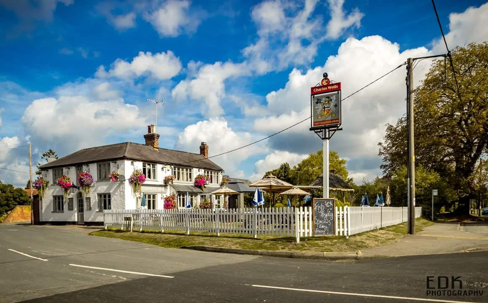
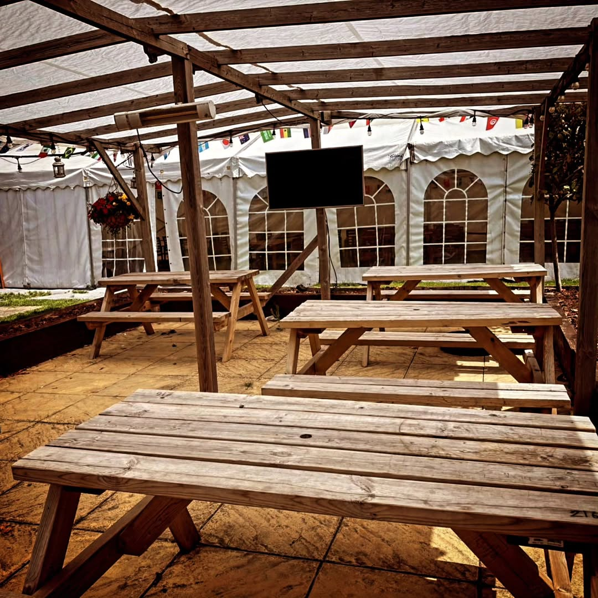

Freshly cooked food
Hearty pub classics, stone-baked pizzas and generous Sunday roasts, cooked from scratch with locally sourced ingredients.

Photo: EDK PhotographyFreshly cooked food, well-kept real ales and a friendly local atmosphere, with dogs and families always welcome.
Tucked beneath the Chiltern Hills, The Chandos Arms has been the heart of Weston Turville since 1842. We're a proper village pub, somewhere to settle in by the bar with a pint, gather the family for a roast, or rest your boots after a walk on the hills. Whatever brings you through the door, you'll find a friendly face and a warm welcome.
Hearty pub classics, stone-baked pizzas and generous Sunday roasts, cooked from scratch with locally sourced ingredients.
A Charles Wells house pouring Eagle IPA alongside rotating guest ales, plus a thoughtfully chosen wine list and proper cocktails.
A large front beer garden for sunny afternoons and a cosy heated marquee with big screens for live sport all year round.
Muddy paws and little ones are part of the furniture here. There's always a water bowl on the go and a friendly fuss for every dog.
images/ as sunday-roast.jpg.
From beer-battered fish & chips to our famous Sunday roast with all the trimmings, everything is freshly prepared in our kitchen. We work with local butchers, fishmongers and growers wherever we can, and we're always happy to adapt dishes for dietary needs.
Sunday roasts are served 12–5pm and book up fast. Reserve your table to avoid missing out.
There's more to a good local than food and drink. Join us for quiz nights, live sport on the big screens and live music, or hire our marquee for your own celebration.
Cheer on the big games in our heated marquee. All the major fixtures are shown on large screens, whatever the weather.
Gather a team and test your wits at our friendly pub quiz, a proper village night out with prizes to be won.
From live bands to seasonal celebrations, keep an eye out for our regular events through the year.
Pop in for a pint or settle in for a meal. Kitchen times can vary, so please call ahead for food and to book a table, especially at weekends.
| Monday | 12:00–23:00 |
|---|---|
| Tuesday | 12:00–23:00 |
| Wednesday | 12:00–23:00 |
| Thursday | 12:00–23:00 |
| Friday | 12:00–00:00 |
| Saturday | 12:00–00:00 |
| Sunday | 12:00–22:30 |
Hours shown as a guide. Please confirm current times by phone.

Whether it's a quiet pint, a family roast or a celebration in the marquee, give us a call and we'll save you a spot.